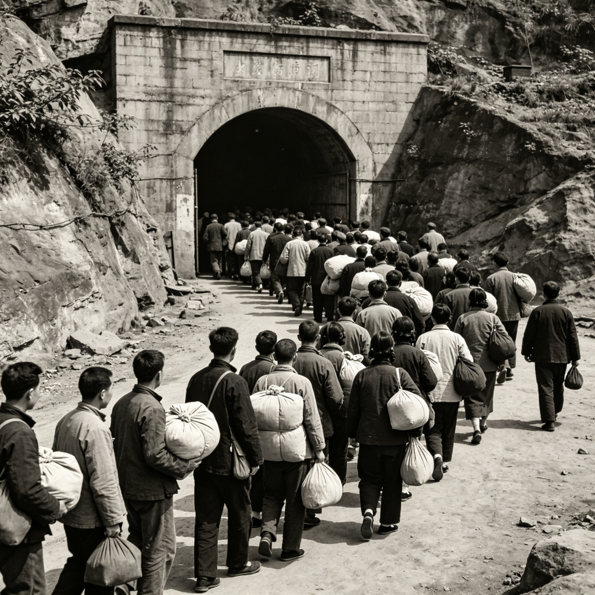
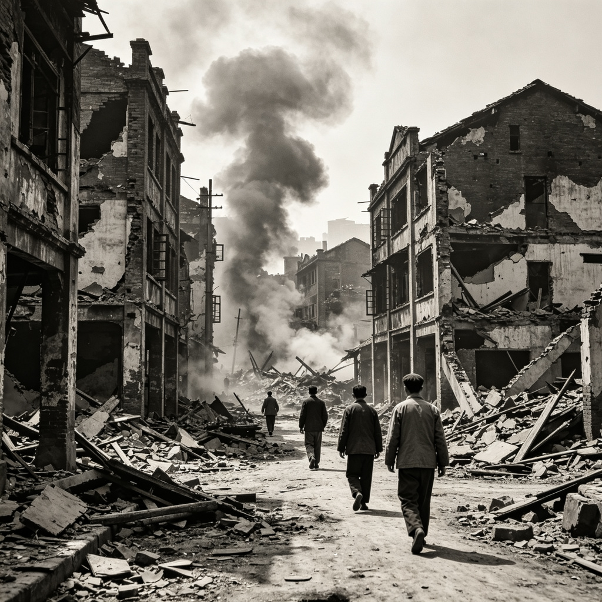

📜 历史现场
1941年6月5日，日军再次对重庆发动大规模空袭。从傍晚6时到午夜12时，
日军飞机分三批轮番轰炸，持续时间长达6个小时。
由于空袭来得突然，大量市民涌入较场口大隧道防空洞。洞内拥挤不堪，
通风设施严重不足。随着时间推移，氧气逐渐耗尽，人们开始窒息、踩踏——
这就是抗战史上震惊中外的"较场口大隧道惨案"。
事后统计，遇难者人数在千人至数千人之间，至今未有精确数字。
📷 历史影像

空袭警报响起：市民带着包裹，秩序井然地走向防空洞入口

轰炸过后的街道：残破的建筑，瓦砾遍地，远处还有烟雾升起
当时，你站在洞口
空袭警报已响了三个小时，你闻到了烟味。你选择——
（这一步必须亲历：三条出路只能选一次，选定后会作为一件"隧道碎片"收入档案柜）
【结局碎片一】
你跟着人流挤进了隧道深处。越往里越闷，空气越来越稀薄。
有人开始咳嗽，有人开始喊"让我出去"。你摸到墙壁，全是汗——不是你一个人的。
后来你才知道，那天晚上，最深处的人，再也没有走出来。
你活下来了，但你永远记得那种窒息的感觉。
——这不是游戏，这是1941年6月5日夜里，几千重庆人真实的记忆。
【结局碎片二】
你转身往城外跑。街上全是人，哭喊声、脚步声、远处的爆炸声混在一起。
你跑到江边，看到有人在水里，有人在岸上。
你不知道自己跑了多久，直到听到解除警报的声音。
你回头望，山城的方向，火光把云都烧红了。
——跑出来的人是幸运的，但那天晚上，很多人没能跑出来。
【结局碎片三】
你留在洞口。一个母亲抱着孩子，你帮她把孩子接过来，往洞里递。
一个老头腿跑不动，你架着他往里走。
你不知道自己扶了多少个人。最后一波人进去的时候，你发现自己也出不去了——
洞口已经被堵死了。
——在最黑的夜里，总有人选择拉别人一把。这座城，就是靠这样活下来的。
📁 现场拾得
在隧道入口的墙角，你捡到一张被汗浸透的纸条。上面用铅笔歪歪扭扭写着：
"妈，我在较场口。别等我吃饭。——狗儿"
🔓 新地点解锁
你在隧道里遇到了一个印刷工人，他告诉你——
明天报馆要出一期号外，记录今晚的事。如果你想知道更多，可以去
新华日报社看看。